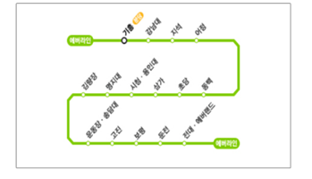

애버랜드 이용안내
- 안전하고즐거운 이용을 위하여 아래 물품의 반입을 제한합니다.
- 동물에게 음식을 주거나 플래시를 켜고 촬영하지 마세요.
- 가지고 오신 도시락은 피크닉 영역에서 이용해 주세요.
※ 대기 동선에서 기다리기 어려운 장애인 손님을 위하여 탑승 예약을 도와드리고 있으니 근무자에게 문의해 주시기 바랍니다.
대중교통 정보
- 지하철이용
- 에버라인 종접에서 내려서 셔틀버서(무료)로 애버랜드, 캐리비안베이 까지 이동
- ※ 에버라인 운행시간 : 05:30~23:30
-

-
버스이용
- - 5002번 : 신논현역 - 강남역 - 양재역 경유
- - 5700번 : 강변역 - 잠실역 - 송파역 - 수서역 경유
- - 66-4번 : 수원역 - 수원 - 동백 - 용인 경유